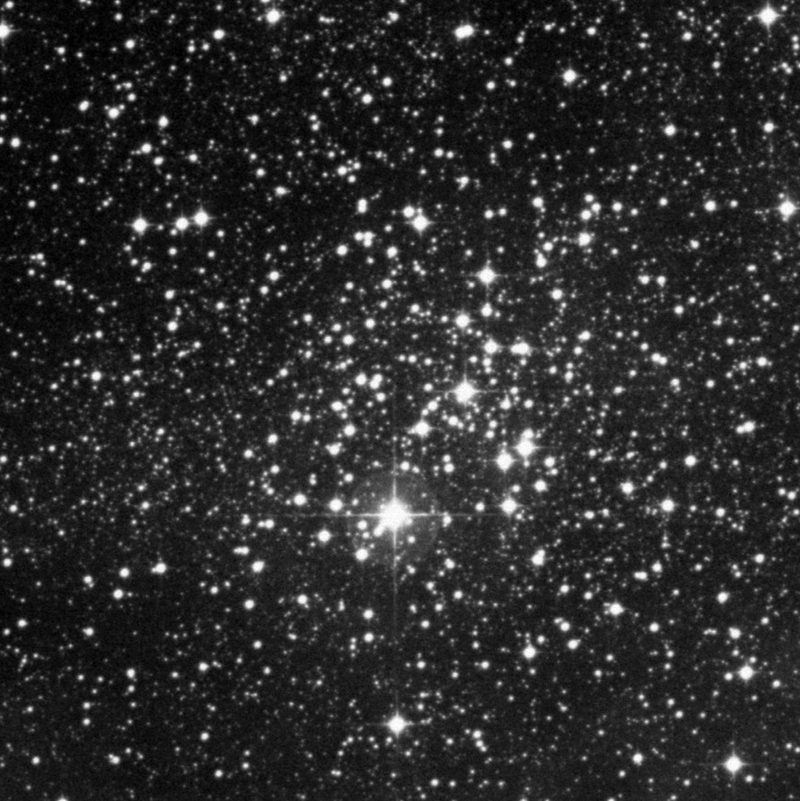
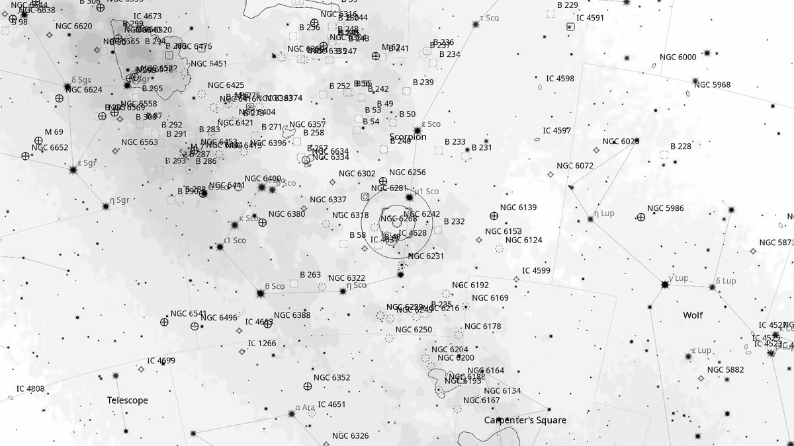
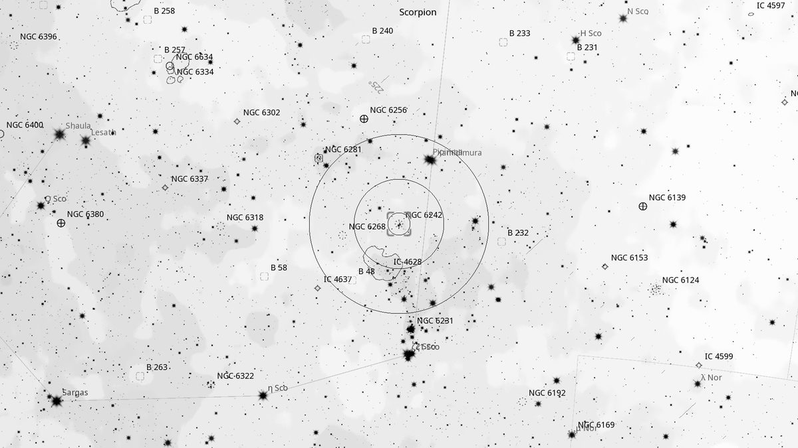
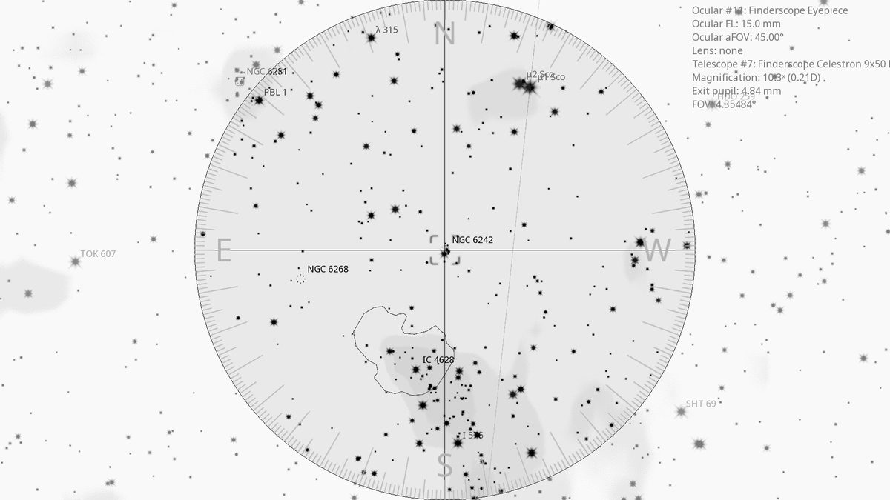
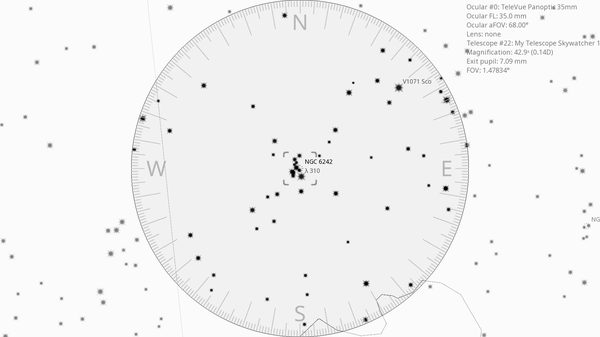

NGC 6242 (Cl)
Open Cluster in Scorpius
| R.A. | Dec. | Size | Mag | SB | Cnt.St | Type | Distance | Chart |
|---|---|---|---|---|---|---|---|---|
| 16h 55m 37.3s | -39° 28′ 09.8″ | 10.0′ | 6.4 | 11.1 | I3m | Cl | -- | -- |

Source: POSS-2 UK Schmidt Red (STScI) | Field: 15′ × 15′
Background
NGC 6242 is a small, compact open cluster about 3,500 light-years away in Scorpius. Around 50 million years old, with 30–40 members. Sits in the rich starfield of the Scorpius–Centaurus association near the tail of Scorpius.
My Observing Notes
25-cm (Meade 10-inch LX200, The Coffee Grinder): Picked up in a triangle of open clusters near ζ Sco (NGC 6242, NGC 6268, H 12). At 6.4 magnitude, 9' wide, it is not as bright as its showy neighbour NGC 6231. A compact group of 30–40 stars with no discernible pattern at this aperture.(Friday, May 2025)
References
Charts

Ultra-wide view (~25° field)

Wide-field view with Telrad rings (4°, 2°, 0.5°)

Finderscope view (9×50 RACI, ~4.4° TFOV)

Eyepiece view — 35 mm Panoptic on 12-inch f/5 (1.6° TFOV)